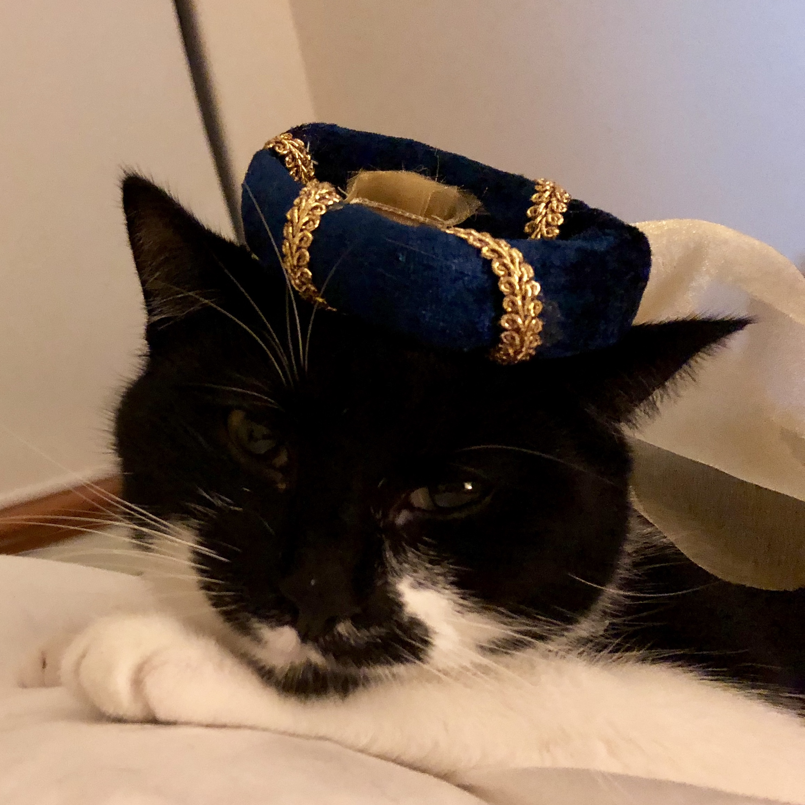
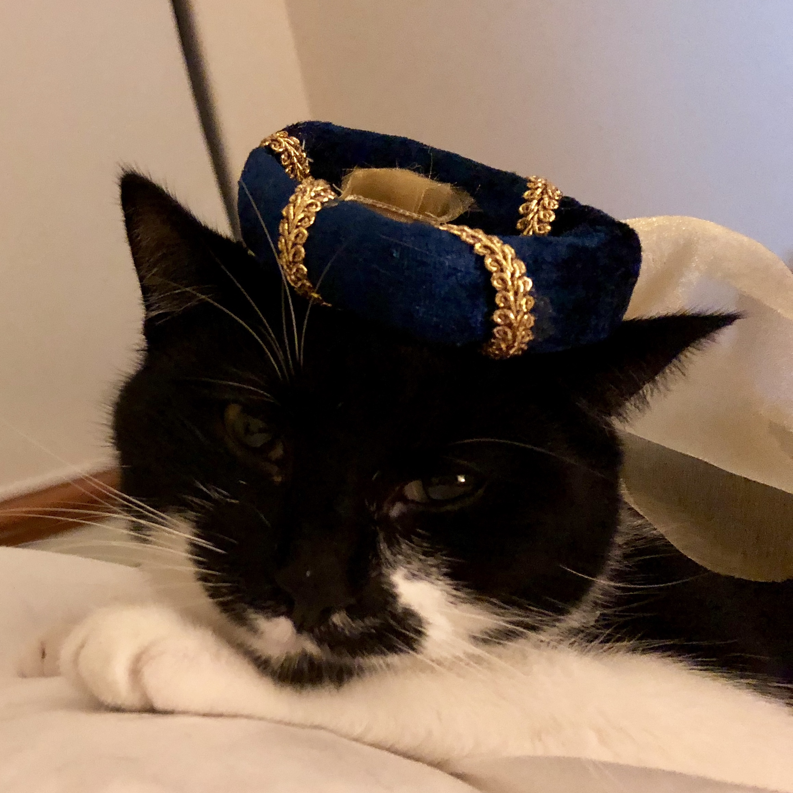

Hello World! I'm Kate, women in tech advocate and lover of cupcakes and cats. I'd love to share some of my passions with you. Keep reading below on my favourite topics.
Kate is the founder of She Codes Australia. She Codes is on a mission to increase diversity in tech by inspiring 100,000 women across Australia to enter tech careers by 2025. We do this in three ways through programs, community and our partnerships with industry. Kate is passionate about the WA startup and innovation community, connecting people, and providing opportunities. She is the Program Coordinator for Spacecubed, has managed the Plus Eight Accelerator the past 2 years, and coordinated more than 30 innovation events including Startup Weekend and other hackathons. As a firm believer in female entrepreneurship and women helping women, Kate is an activator for SHEeo, and a sub-committee member for WiTWA. She is also the recent winner of the West Australian newspaper Rising Stars award for young leaders in WA, and a semi finalist for the Seven News Young Achiever Awards.
Fun fact - once upon a time I nearly moved to Melbourne to go to culinary school. I've been baking cupcakes and cakes for birthdays and other celebrations for well over a decade.
I have two loveable black and white cats Fleur and Roary. They get up to plenty of antics around the house including chasing moths and bugs, and playing with cardboard boxes. For more info on their antics, visit the Blog page.
 

This is a work in progress! Currently upskilling in HTML/CSS, Python, Git and React. Stay tuned for more projects in the coming weeks! If you have suggestions on fun tutorials to complete please drop me a line!